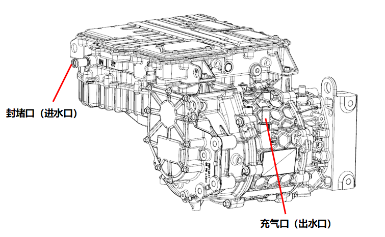
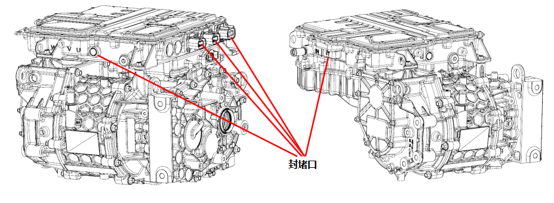
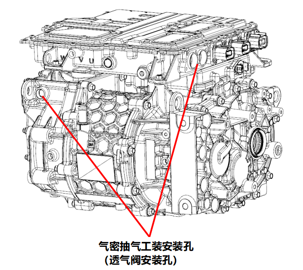

1. Испытательной средой является газообразная среда, газовой средой может быть воздух, азот или инертный газ, температура среды должна соответствовать температуре окружающей среды.
2. Точность измерительных приборов должна быть не ниже класса 1.5, рекомендуемый диапазон измерений составляет от 1.5 до 3 кратного значения испытательного давления.
3. Выполнить Установка Специальный приспособлений для проверки герметичности водяных каналов: заглушки и приспособления для подачи воздуха; затем плавно подать в контур охлаждения электропривода в сборе испытательную среду под давлением 200 ± 5 kPa, время накачки 15 s, время стабилизации давления 5 s, время проверки 5 s; если объем утечки составляет ≤ 5 mL/min, результат считается положительным.

1. Перед проверкой герметичности убедиться, что снят 1 вентиляционный клапан, расположенный на задней торцевой крышке электродвигателя.
2. Использовать Специальный заглушки для проверки герметичности полости, чтобы заглушить разъем AC, разъем PTC, разъем OBC, низковольтный разъем и отверстие для Установка вентиляционного клапана контроллера.

3. Установить Специальный приспособление для создания вакуума при проверке герметичности полости в отверстие для Установка вентиляционного клапана на задней торцевой крышке электродвигателя и в отверстие для соединения шины постоянного тока.
4. Использовать метод отрицательного давления для проверки герметичности полости, при этом необходимо одновременно подключить 2 шт. приспособлений для откачки воздуха; плавно откачать воздух из полости до отрицательного давления 22 ± 1 kPa, время откачки 45 s, время стабилизации давления 10 s, время проверки 5 s; если объем утечки составляет ≤ 20 mL/min, результат считается положительным.

5. После успешного прохождения проверки герметичности полости запрессовать вентиляционные клапаны в соответствующие отверстия для Установка.